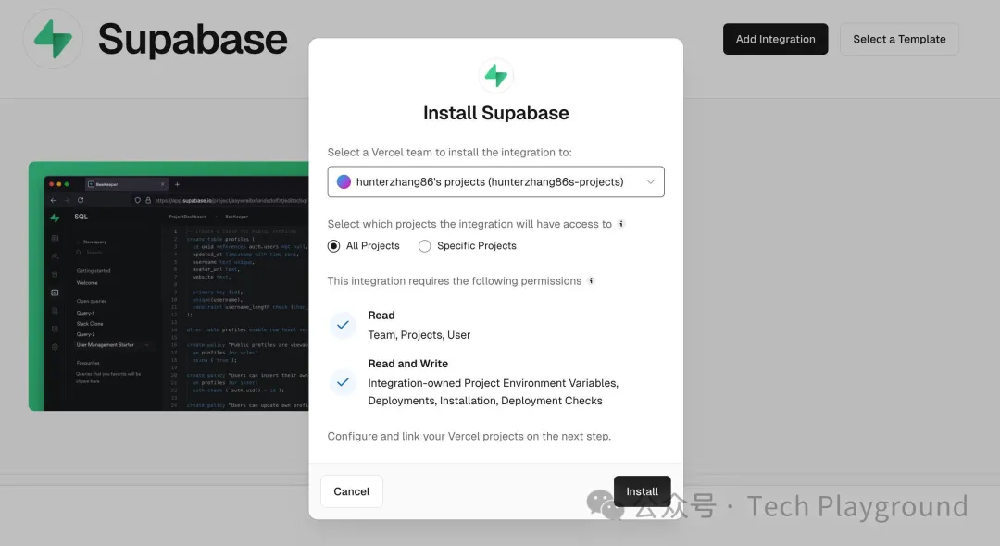
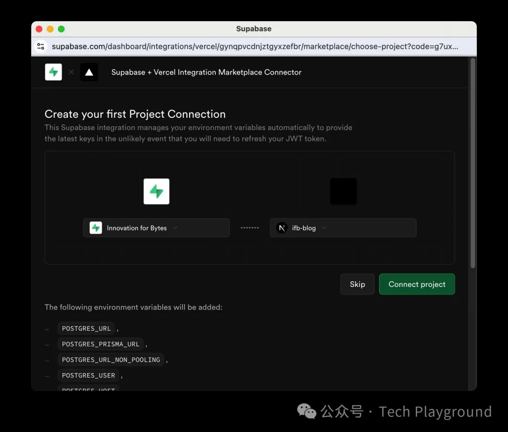
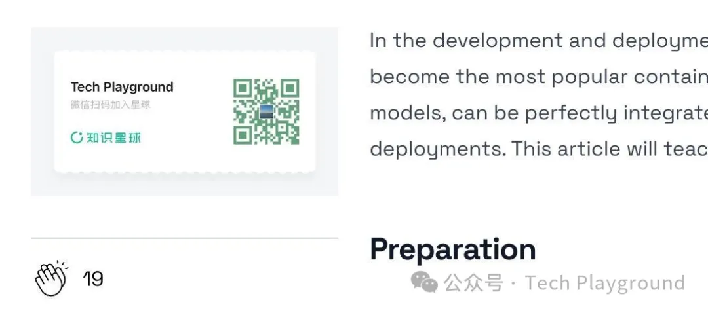

HaoTian · 2024-10-03 21:49:11
Vercel 是一个强大无比的前端应用部署平台，不仅能轻松将你的应用快速上线，还提供了多样的 AI 集成功能，甚至可以通过 AI 自动生成页面。而如果你的项目需要一个可靠的 PostgreSQL 数据库，Supabase 将是你不二的选择。Supabase 提供便捷的 JavaScript SDK，使得在 Vercel 上部署 Next.js 应用时使用数据库变得异常简单。
想象一下，你可以在数小时内开发出令人惊叹的应用！Vercel 和 Supabase 的完美结合，让这一切成为可能。无论是快速迭代原型还是构建复杂项目，这对黄金组合都能助你一臂之力。这绝对是每位开发者工具箱中不可或缺的终极利器。这篇文章将教你如何通过 Supabase 快速实现博客的点赞功能，请坐好扶稳，我们马上出发。
Vercel 是一个静态站点托管平台，主要针对前端开发者，提供了高性能、易于使用的部署和持续集成服务。它的特点包括：
1. 快速部署：通过与 GitHub、GitLab 和 Bitbucket 的集成，可以自动化部署过程。
2. 全球 CDN：通过全球内容分发网络（CDN），确保你的网站在世界各地都能快速加载。
3. Serverless Functions：支持无服务器函数，使你可以在前端应用中轻松添加后端逻辑。
Supabase 是一个 Firebase 开源替代品，它为开发者提供了实时数据库、认证、存储和 Edge Functions 等功能。其特点包括：
1. PostgreSQL 数据库：强大的关系型数据库，支持复杂查询和事务。
2. 实时数据同步：通过 WebSocket 实现数据的实时更新。
3. 用户认证与权限管理：内置多种认证方式和细粒度权限控制。
4. 文件存储：支持文件上传和管理。
创建 article_like 表，这个表里面会存储我们每篇文章的点赞数据。
打开 https://vercel.com/integrations/supabase ，将 Vercel 项目和 Supabase 项目做关联。
 关联完成后，Vercel 会自动将 Supabase 的密钥配置到环境变量里面。
然后，在你的 Next.js 项目中建立一个 supabase.tsx 文件，配置 Supabase 客户端。
'use client'
import { createClient } from '@supabase/supabase-js'
const supabaseUrl = process.env.NEXT_PUBLIC_SUPABASE_URL as string
const supabaseAnonKey = process.env.NEXT_PUBLIC_SUPABASE_ANON_KEY as string
export default createClient(supabaseUrl, supabaseAnonKey)
在你的页面或组件中导入并使用 Supabase 客户端。比如，通过 Supabase 实现一个点赞的组件：
"use client";
import React, { useState, useEffect } from "react";
import { PiHandsClappingThin } from "react-icons/pi";
import supabase from "../utils/supabase";
import "../css/likebutton.css"; // 引入样式文件
const LikeButton = ({ article }) => {
const [likeCount, setLikeCount] = useState(0);
const [isAnimating, setIsAnimating] = useState(false);
const handleLike = async () => {
// 如果前一次操作未完成，就直接先跳过
if (isAnimating) {
return;
}
setIsAnimating(true);
setTimeout(() => setIsAnimating(false), 200);
if (likeCount > 0) {
const { data, error } = await supabase
.from("article_like")
.update({ like_count: likeCount + 1 })
.eq("article", article);
if (error) {
console.error(error);
} else {
setLikeCount(likeCount + 1);
}
return;
}
// 1. 检查是否存在对应的 article_like 记录
const { data: articleLike, error } = await supabase
.from("article_like")
.select("*")
.eq("article", article)
.single();
if (error && error.code !== "PGRST116") {
// 如果查询出错，且不是因为找不到记录
console.error(error);
return;
}
if (articleLike) {
// 2. 如果有记录，更新 like_count +1
const { data, error } = await supabase
.from("article_like")
.update({ like_count: articleLike.like_count + 1 })
.eq("article", article);
if (error) {
console.error(error);
} else {
setLikeCount(articleLike.like_count + 1);
}
} else {
// 3. 如果没有记录，插入新记录并设置 like_count = 1
const { data, error } = await supabase
.from("article_like")
.insert({ article: article, like_count: 1 });
if (error) {
console.error(error);
} else {
setLikeCount(1);
}
}
};
useEffect(() => {
fetchCount();
});
const fetchCount = async () => {
const { data, error } = await supabase
.from("article_like")
.select("*")
.eq("article", article);
if (error) {
console.error("Error get article count:", error);
} else if (data && data[0]) {
setLikeCount(data[0].like_count);
} else {
setLikeCount(0);
}
};
return (
<div
className={`like-button ${isAnimating ? "animating" : ""}`}
style={{ display: "flex", alignItems: "center", marginRight: "10px" }}
>
<PiHandsClappingThin
size={30}
onClick={handleLike}
style={{ cursor: "pointer" }}
/>
<span style={{ marginLeft: "10px" }}>{likeCount}</span>
</div>
);
};
export default LikeButton;
将代码推送到你关联了 Vercel 的 Git 仓库，然后在 Vercel 仪表盘上点击 "Deploy" 按钮即可完成部署。看下效果：
